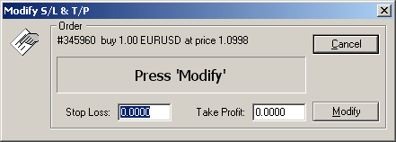

Установка, редактирование и удаление Stop Loss
и Take
Profit ордеров
Установка Stop
Loss и Take Profit ордеров в открытой
позиции. Выделите открытую позицию в окне торгового терминала, нажмите правую кнопку мыши. В
появившемся контекстном меню выберите пункт Modify or
Delete Order. Появится окно:

Установите необходимые уровни ордеров (поля Stop Loss и Take Profit) и
нажмите кнопку Modify. При установке ордеров в
качестве разделителя дробной части обязательно используйте точку, а не
запятую. Если при установке ордера будет выдано сообщение Invalid stops, значит или Вы пытаетесь установить ордер
слишком близко от текущей цены (ближе 10 пипсов), или использовали запятую
в качестве разделителя дробной части, или перепутали местами стоп и
тейк-профит, или что-то иное. Для удаления Stop
Loss или Take Profit ордера установите его
в 0.0000. Установка Stop
Loss и Take Profit ордеров в отложенном
ордере. Выделите отложенный ордер в окне торгового терминала, нажмите правую кнопку мыши. В
появившемся контекстном меню выберите пункт Modify or
Delete Order. Появится окно:

Установите необходимые уровни ордеров (поля S/L и T/P) и нажмите кнопку
Modify. При установке ордеров в качестве
разделителя дробной части обязательно используйте точку, а не запятую.
Если при установке ордера будет выдано сообщение Invalid
stops, значит или Вы пытаетесь установить ордер слишком близко от
цены ордера (ближе 10 пипсов), или использовали запятую в качестве
разделителя дробной части, или перепутали местами стоп и тейк-профит, или
что-то иное. Для удаления Stop Loss или Take Profit ордера установите его в 0.0000.
Назад Содержание Далее